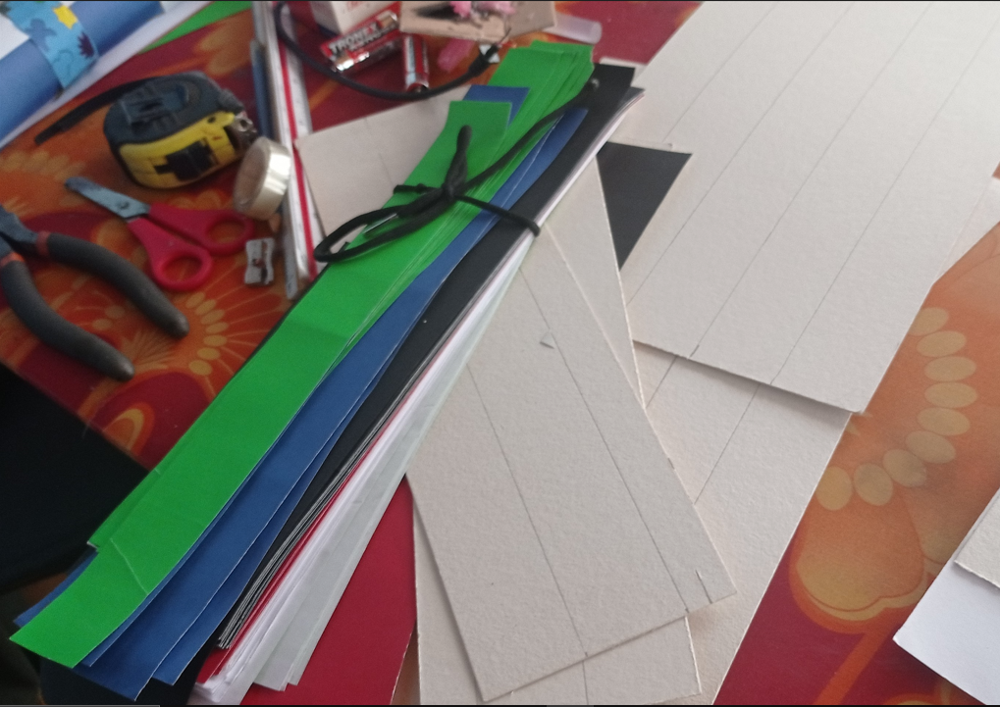
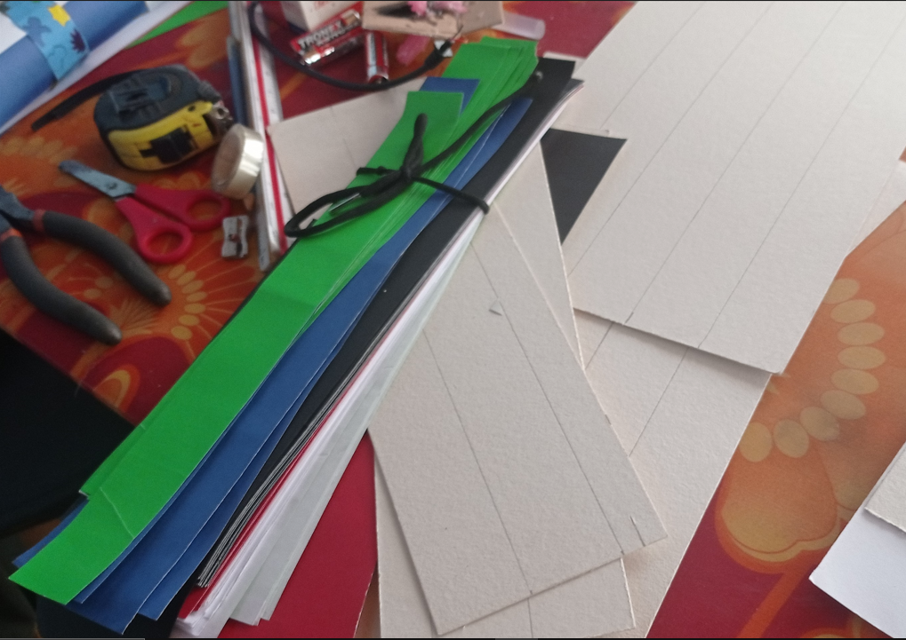
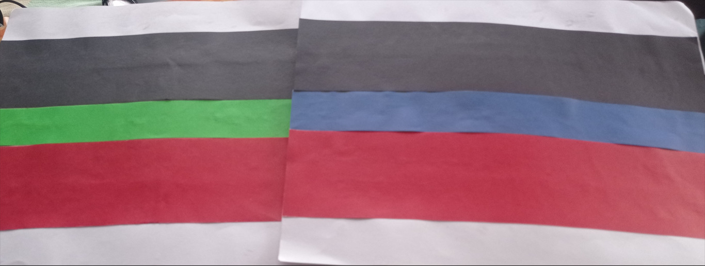
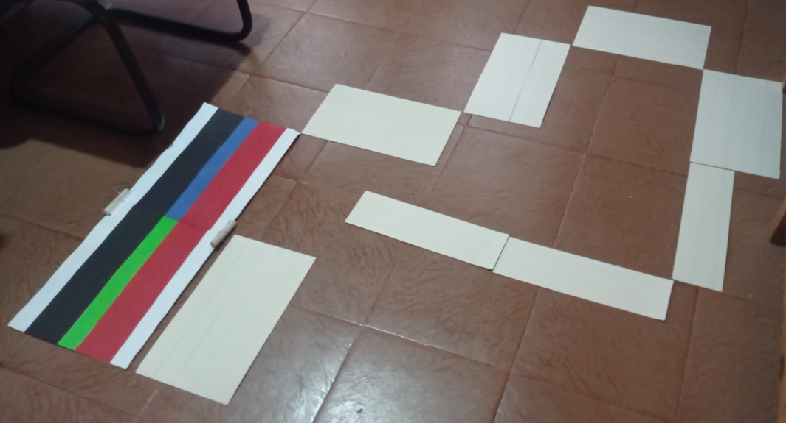
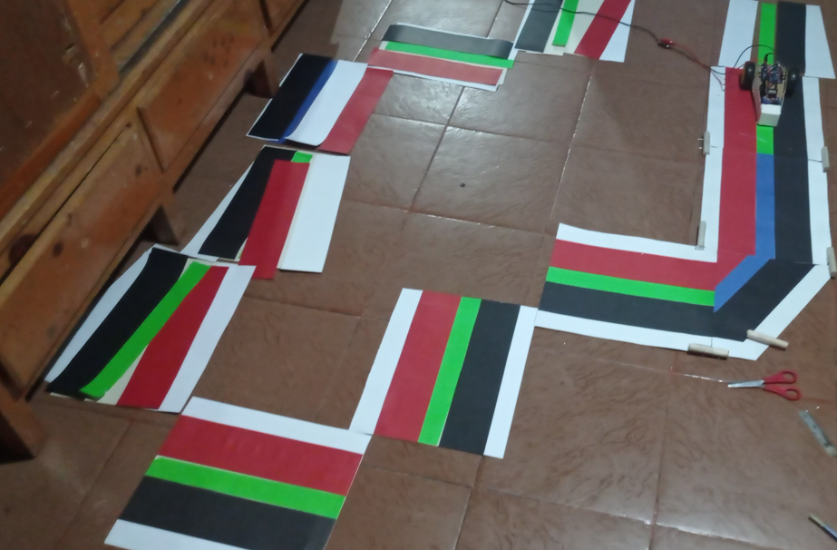

Pista de colores
¡Es el momento esperado de poner a prueba nuestro proyecto y ver en acción el carro controlado por Arduino! Aquí están las pruebas que realizaremos para asegurarnos de que todo funcione como esperamos. Primero diseñamos nuestra pista donde funcionara nuestro carro:
 




- Color Blanco: Cuando el sensor detecta tonos de color blanco, hemos programado el carro para detenerse por completo. Observen cómo reacciona el carro ante este color neutral.
- Color Negro - Giro a la Derecha: Si el sensor identifica tonos de color negro, el carro ejecutará un giro hacia la derecha. Este comportamiento es clave para el seguimiento de líneas y la navegación precisa.
- Color Rojo - Giro a la Izquierda: Similar al caso anterior, la detección de tonos de color rojo provocará un giro hacia la izquierda. Esta función asegura que el carro pueda seguir la línea correctamente.
- Color Azul - Avance a Velocidad Media: Cuando el sensor capta tonos de color azul, el carro avanzará hacia adelante a una velocidad media. Observen cómo responde el carro a este estímulo de color.
- Color Verde - Avance a Máxima Velocidad: Si el sensor detecta tonos de color verde, el carro irá hacia adelante a su máxima velocidad.
Esta prueba nos permitirá experimentar con la capacidad del carro para ajustar su velocidad según el color detectado.
Recuerden observar cuidadosamente las reacciones del carro en cada prueba. Si las respuestas no son las esperadas, podríamos necesitar ajustar la calibración del sensor o el código de Arduino. ¡Diviértanse explorando las posibilidades y disfruten de su carro controlado por colores!